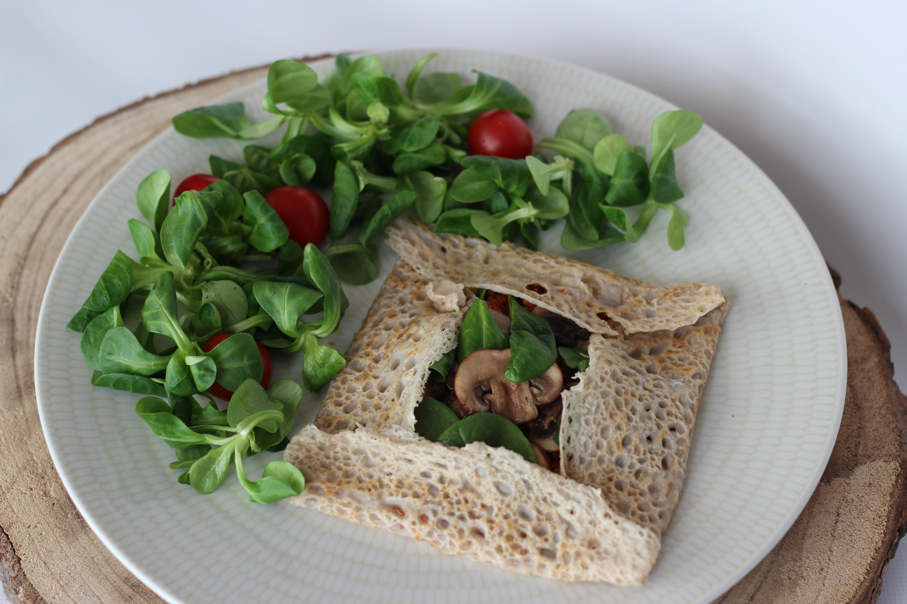

Home
Galettes Recipe

Description:
Galettes are a traditional dish from Brittany, in France. They were made by farmer (though Brittany was mostly a farmer region). They had only an egg within, but now you can add whatever you want on it! The traditional way is : egg, ham, Emmental gratted cheese (I like to add some mushrooms)
Required ustensils
- A bilig (Breton way to say crêpe maker)
- A rozell: wooden tool we use to "turn" (spread) galettes or crêpes (See here for details)
- A really long spatula
- A mixing bowl
- A ladle
- A measuring jug
- A whisk
- A fork
Ingredients
For 8 galettes:
- 200 grams of buckwheat
- A little salt
- 450 grams of water
- 1 egg Note: If you are vegan, you can remove it.
- Some vegetable cooking oil (preferably rape or sunflower)
Note: These toppings are not mandatory, you can put whatever you want. However, they are the traditional ones.
- 1 egg
- Some mushrooms
- A bit of gratted cheese
- Thin slices of ham
- A little SALTED butter
Steps
- In a mixing bowl, put 200g of buckwheat and a little salt. Mix with a fork (don't wash it, you'll reuse it).
- Add an egg and mix with a whisk. Skip if you're vegan
- Add little by little 450g of water, mixing it each time. You should obtain a grayish batter.
- Now it is time to use your bilig! First, heat up the device.
- Spread a little oil on the bilig, with some paper towel.
- Put a ladleful of batter on the bilig.
- Now quickly spread the batter with the rozell, turning clockwise.
- Use your spatula to flip over the new galette, and lower the fire.
- Add the toppings that you want! I will describe the traditional toppings.
Crack an egg open in the center.
- Spread the egg white with the fork.
- Add in the order:
cheese
mushrooms
ham
butter
- Now fold back the four edges of the stuffed galette in a square shape and put it in a plate.
- Voilà! Enjoy!